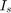
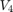
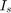
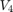

Assignment 4: Circuit Modelling
Tyler Armstrong 101009324
Contents
Introduction
The goal of this assignment was to model an RLC circuit, and use modified nodal analysis to find the node voltages and currents in the circuit. The equation used to calculate these is:
Where is the vector of node voltages and currents, contains the coefficients of non-derivative terms, contains the coefficients of 1st order time derivative terms, contains any nonlinear terms, is the input from any independent sources, and is:
The circuit simulated in this assignment contains only linear elements, so the matrix is zero. is known, so the equation can be solved by iterating over .
Part 1: Constant Input Voltage
In this section, the circuit will be simulated with a constant input voltage. The voltage was swept from -10V to 10V, and a plot was made of the node voltages at node 3 and node 5 (the output voltage). A second plot was made by sweeping the frequency for a constant AC voltage of 1V. The two plots are shown below.
A4MNA1;
The order of the variables in the matrices is  , , , , , , , and . The matrices are:
, , , , , , , and . The matrices are:
disp(G);
Columns 1 through 7
1.0000 0 0 0 0 0 0
1.0000 1.0000 -1.0000 0 0 0 0
0 0 1.0000 -1.0000 0 0 0
-1.0000 0 1.5000 0 1.0000 0 0
0 0 0 0.1000 -1.0000 0 0
0 0 0 -10.0000 0 0 1.0000
0 0 0 0 0 1.0000 10.0000
0 0 0 0 0 0 -10.0000
Column 8
0
0
0
0
0
0
-10.0000
10.0010
disp(C);
%
Columns 1 through 7
0 0 0 0 0 0 0
0.2500 0 -0.2500 0 0 0 0
0 0 0 0 -0.2000 0 0
-0.2500 0 0.2500 0 0 0 0
0 0 0 0 0 0 0
0 0 0 0 0 0 0
0 0 0 0 0 0 0
0 0 0 0 0 0 0
Column 8
0
0
0
0
0
0
0
0
Part 2: Transient Case
In this section, the circuit is simulated with three different time-varying input signals.
- A 1V step function, with a delay at 0.03s
- A 1V sine wave, with a frequency of 33.333Hz
- A 1V Gaussian pulse with a delay of 0.06s and a standard deviation of 0.03s
The plots of the output voltage and the frequency spectrum for each signal are shown below. In the voltage plots, the input function is shown in blue, and the output is in red.
A4MNA2;
As expected, the sine wave's frequency spectrum has peaks at . The step function has a delta function at the centre, combined with a sinc function. The spectrum of the Gaussian pulse is also Gaussian. There is very little distortion in the signals.
Part 3: Noise
In this section, a capacitor and a current source were added in parallel with . This models the noise of the signal across the resistor. had a magnitude of 1mA, with a Gaussian distribution. The plots of the output voltage and its frequency spectrum are given below.
A4MNA3;
There is significant noise visible in both plots.
The new C matrix is:
disp(C);
Columns 1 through 7
0 0 0 0 0 0 0
0.2500 0 -0.2500 0 0 0 0
0 0 0 0 -0.2000 0 0
-0.2500 0 0.2500 0 0 0 0
0 0 0 0.0000 0 0 0
0 0 0 0 0 0 0
0 0 0 0 0 0 0
0 0 0 0 0 0 0
Column 8
0
0
0
0
0
0
0
0
The G matrix was unchanged.
The following two plots show the effects of varying the time step and the noise capacitor from their original values.
A4MNA4;
The output voltage curves for and are not visible behind the curve, so the noise appears to increase as decreases.
Reducing the time step by a factor of 10 increased the output voltage by approximately the same factor. This makes the choice of time step very important when designing a simulation.
Part 4: Nonlinear Elements
If the current is a nonlinear function, the simulation here no longer works. To fix this, the matrix would need to include the equation for . Since the matrix is now non-zero, the variables at each step need to be calculated using a root-finding algorithm.